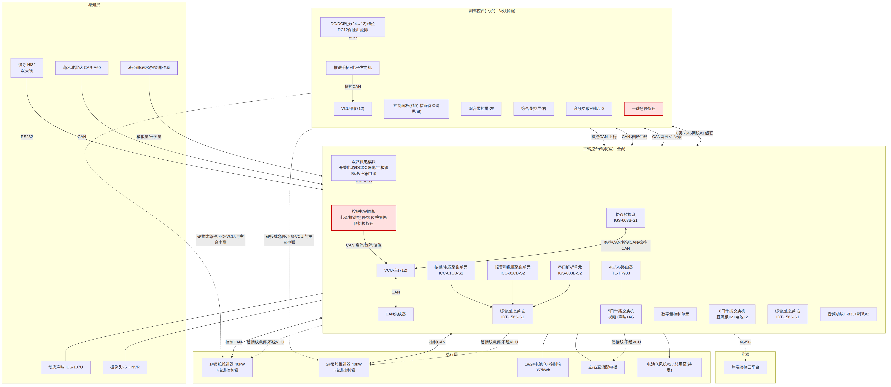

二、总体架构:主/副驾控台双中枢拓扑
2.1 架构设计要点(核心发现)
细读框图第 2 页"副驾控台相关电气配盘"后确认三个关键架构特征,这是理解整套系统的前提:
1. 双 VCU,而非单中枢:主驾控台内有 VCU-主(712),副驾控台(飞桥)同样配置一套独立的 VCU-副(712) + DC/DC 转换模块(24→12) + 8 位 DC12V 保险汇流排 + 一键急停旋钮。两台 VCU 通过 CAN 互联做权限仲裁,而不是所有信号都汇总到唯一中枢。
2. 副驾控台是"级联简配"而非"独立全配":副驾控台没有协议转换盒、交换机、按键/电源采集单元等采控单元,其双屏数据来自主驾控台级联——1 根 CAN 网线级联双屏数据、1 根 6 类 RJ45 网线级联摄像头/交换机数据(Excel"驾控台相关接线(副)"第 1–2 行)。
3. 控制通道与安全通道物理分离:凡是"启停/故障/复位"类操作信号经 VCU 走 CAN;凡是"急停/电池急停/电源启停"类安全信号硬接线直连,不经 VCU、不经计算单元(Excel 逐条标注"是否经过驾控台内 VCU")。
2.2 分层拓扑图

2.3 主 / 副驾控台配置差异对照表
| 配置项 | 主驾控台(驾驶室) | 副驾控台(飞桥) |
|---|---|---|
| 按键面板 | 完整(电源/推进/急停/复位/消音/SOC/主副权限切换) | 精简版,表述存疑(见§8) |
| VCU(712) | 有 | 有(独立一套,经 CAN 与主台仲裁) |
| 协议转换盒/采集单元/串口解析/交换机 | 全套 | 无,数据经主台级联而来 |
| 双屏 | 有 | 有(级联主台数据) |
| 音频功放+喇叭 | 有 | 有(独立一套) |
| 一键急停旋钮 | 有 | 有(与主台串联进整体急停回路) |
| 供电模块 | 双路 AC220+DC24 完整链路 | DC/DC(24→12)+8位DC12汇流排(简配) |
| 推进手柄/电子方向机 | 有 | 有 |
权限切换硬约束(Excel + 框图一致):主副驾驶权限切换前,两个驾控台手柄必须回空挡。